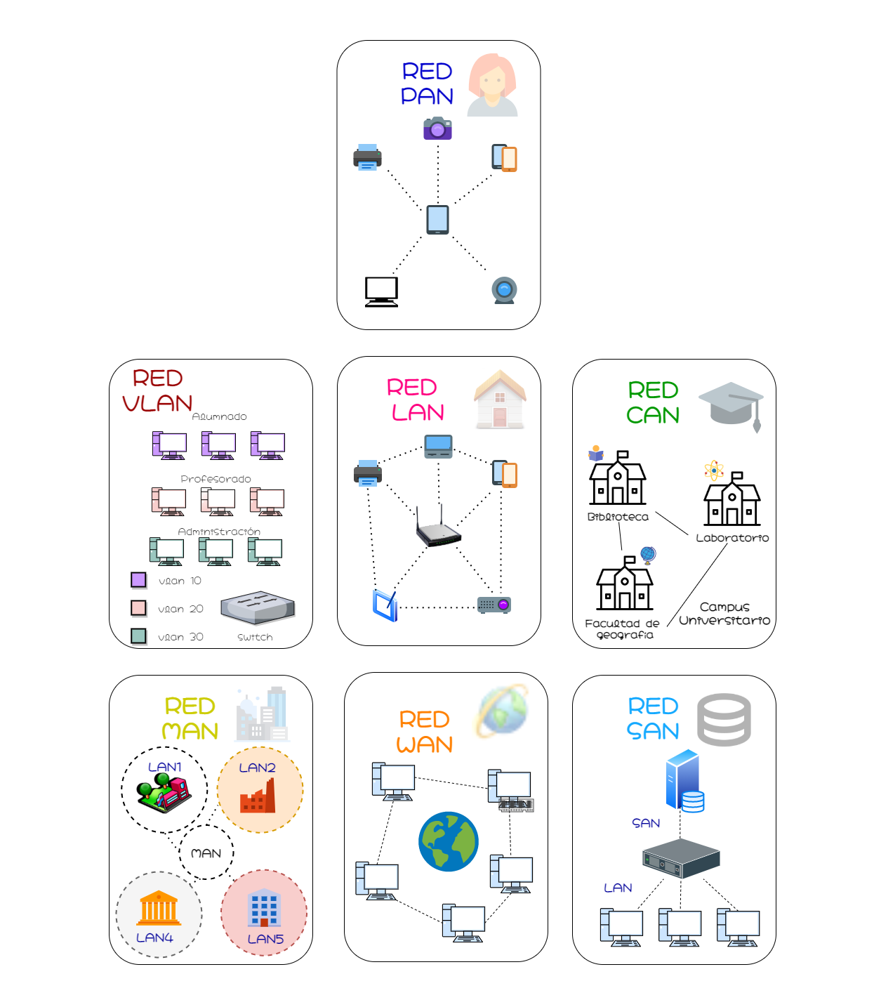

Se trata del tipo de red informática más pequeño y básico. Una red PAN se compone de un módem, un ordenador o dos, teléfonos, impresoras, tablets, etc. Se trata, por tanto, de una red que conecta distintos dispositivos electrónicos en un área reducida e inmediata
PAN es la red que normalmente nos encontramos en oficinas pequeñas o residencias particulares. Son administradas por una sola persona o por una empresa desde un único dispositivo. Uno de los ejemplos más habituales sobre red PAN es la que se establece entre dos dispositivos en un área de unos pocos metros mediante Bluetooth.
Seguro que sabes lo que son las LAN. Se trata de un tipo de red muy común y muy usado que conecta un grupo de ordenadores o dispositivos ubicados en una misma estancia para compartir información y recursos.
Se trata de una red de área local en la que varios dispositivos ubicados en un espacio pueden conectarse entre ellos. Si la conexión se establece entre más de dos dispositivos son necesarios componentes de red para estabilizar y hacer bien la conexión de red LAN.
Al funcionar como una LAN, las WLAN utilizan tecnología de red inalámbrica, como Wi-Fi. Así, en esencia es lo mismo que una red LAN solo que presenta una conectividad de red inalámbrica.
Sus usos generales son los mismos que los de una red LAN, la única diferencia es que la WLAN no depende de cables físicos para conectarse a la red. Esto, al mismo tiempo, facilita la conexión de varios dispositivos sin necesidad de más componentes.
Más grandes que las LAN, pero más pequeñas que las que veremos a continuación, estos tipos de redes se ven típicamente en universidades. Así, nos encontramos ante uno de los tipos de redes informáticas más frecuentes en el ámbito académico.
Se suelen distribuir en varios edificios que están cerca unos de otros para que los usuarios puedan compartir recursos. Además, se trata de un tipo de red informática que se suele conectar, al mismo tiempo, a Internet de manera pública.
Son redes más grandes y que abarcan más que las LAN y que las CAN. Este tipo de redes abarcan un área geográfica determinada, normalmente un pueblo o ciudad. Este tipo de redes informáticas suelen estar compuestas de varias redes LAN conectadas entre ellas.
Su mantenimiento e instalación corre a cargo de una empresa o del propio ayuntamiento. No obstante, hay que tener en cuenta que MAN no quiere decir que deban estar en áreas urbanas, sino que hace referencia al tamaño de la red.
Las redes WAN son las que conectan los ordenadores que se encuentran a distancias físicas considerables. Permiten que los dispositivos se conecten de forma remota entre sí a través de una gran red para comunicarse incluso cuando están a kilómetros de distancia.
Internet es el ejemplo más básico de una WAN, que conecta todos los dispositivos con acceso a él a lo largo y ancho del mundo. Sin embargo, a nivel técnico, cualquier red que se expanda en un área geográfica amplia se puede considerar una WAN, aunque su acceso sea privado.
Las SAN son redes informáticas de alta velocidad que conectan grupos compartidos de dispositivos de almacenamiento a varios servidores. Estos tipos de redes no dependen de una LAN o WAN. Estas redes alejan los recursos de almacenamiento de la red y los colocan en su propia red de alto rendimiento.
Las SAN son redes informáticas de alta velocidad que conectan grupos compartidos de dispositivos de almacenamiento a varios servidores. Estos tipos de redes no dependen de una LAN o WAN. Estas redes alejan los recursos de almacenamiento de la red y los colocan en su propia red de alto rendimiento.
Las redes de tipo SAN se suelen montar con cableado, adaptadores y conmutadores conectados a distintas matrices, tanto de almacenamiento de datos como de tipo servidor. Cada uno de los elementos que componen este tipo de red debe estar interconectado.
Como alternativa a las LAN tradicionales basadas en conmutadores, la tecnología POLAN se integra en el cableado para superar las preocupaciones sobre la compatibilidad con los protocolos Ethernet tradicionales.
POLAN es una arquitectura de LAN de punto a multipunto que emplea divisores ópticos para multiplicar la señal de una hebra de fibra óptica monomodo para repartirla entre usuarios y dispositivos.
Este tipo de redes están construidas y son propiedad de empresas que desean conectar de forma segura sus diversas ubicaciones para compartir recursos informáticos.
De esta manera, nos encontramos con distintos tipos de redes EPN y usos específicos para cada una de ellas. Y es que, hay que tener en cuenta que son las propias empresas las que las crean mantienen y dan permisos de acceso. Estos accesos pueden ser temporales para un uso concreto o permanentes en caso de ser necesario.
Una VPN (Virtual Private Network) permite a sus usuarios enviar y recibir datos como si sus dispositivos estuvieran conectados a la red privada, incluso si no lo están. De esta forma, a través de una conexión virtual, los usuarios pueden acceder a una red privada de forma remota.
Así, una red de tipo VPN te permite crear una red local sin que todos los integrantes de la misma estén conectados entre ellos. Además este tipo de conexión de red permite que se pueda acceder a puntos de Internet que no serían accesibles desde nuestra propia conexión.
